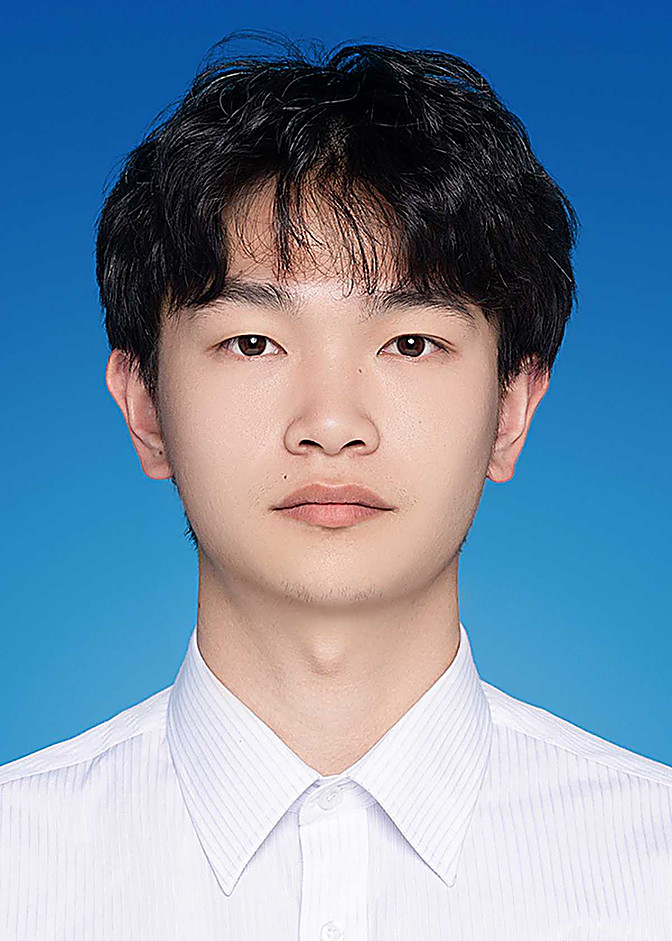

香港大学人工智能硕士在读，系统工程出身，最近正在做一些 AI Infra 和 Agent 应用开发相关的工作。在这之前，我在自动驾驶行业写了三年多的 C++/Python，做后端和系统 Infra 开发。平时想事情的方式更像工程师：把问题拆小，把模块做稳，把性能量出来。
三年C++古法程序员，最近在给 LLM 打下手。
过去几年我一直做「架构设计，让系统跑得稳、跑得快」这件事：在自动驾驶行业做自动驾驶车载 Infra，写类 ROS 框架上的后端模块、监控体系和中间件开发等；更早之前在上海做过一些高精度计算模块的算法工程化方面的工作。2026年及最近接触了模型后训练和数据挖掘方面的工作，算是从系统方向往 AI 方向迈的第一步。
最近的模型训练数据挖掘相关的工作让我意识到，大模型不只是「更大的模型」：后训练、量化推理、数据质量、评测方法，每一个环节都是工程问题，也都是我感兴趣的问题。于是决定把 AI 这一层补到自己的系统栈上——大模型落地最缺的，恰恰是 Infra 的手艺。主力语言是 C++ 和 Python，我喜欢把复杂的问题拆成简单可靠的模块，也相信性能是可以被度量和持续改进的。
从零走通一个小型 LLaMA 架构模型的全生命周期：transformers 从头训练（BPE 分词、GQA），导出 GGUF，用 llama.cpp 量化到 Q4_K_M（体积约为 F16 的 1/4），最后由 Go（Gin）网关对外提供 OpenAI 兼容的推理 API，支持流式输出，Docker Compose 一键编排。另外内置了一个可视化节点编排界面：六个流水线节点在画布上拖拽连线、按拓扑序执行、SSE 实时回传日志。
做这个项目是想把「模型训练」和「系统部署」两头的知识真正串起来——训练侧理解参数和数据怎么变成权重，部署侧理解权重怎么被量化、压缩、高效地对外服务。这也是我理解 LLM Infra 每个环节成本与瓶颈的方式。
一个用 C++ 从零搭起来的全栈 IM：Qt 客户端负责界面，DispatchServer 网关提供 HTTP 接口做登录注册，服务之间用 gRPC 分发和认证，长连接部分基于 Asio 实现异步 TCP 通信，通过池化 io_context 提升并发能力。服务端按模块拆分、支持分布式部署，状态管理和认证服务是解耦的。
做它的初衷是整合这几年的Linux系统开发,架构设计的能力。真正落到一个能跑、能部署的系统上——这个过程让我对 IO 多路复用、连接管理和高并发下的资源分配有了远比平常工作只负责某个模块有了更深的理解。
更多实验性的小项目会放在我的 GitHub 上。